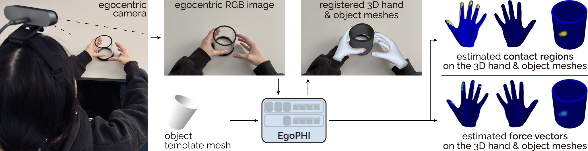
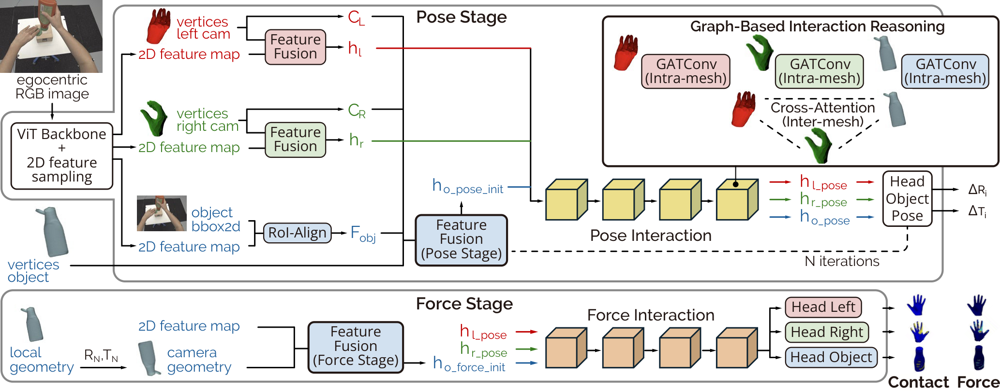

Figure 1: EgoPHI is the first vision-based model that estimates 3D forces and contact during interaction with articulated rigid objects. Given a single egocentric monocular RGB image and the object geometry, EgoPHI registers hand meshes to refine the object pose in a shared camera coordinate frame, and predicts dense per-vertex contact and force distributions over all meshes for physically grounded interaction reasoning.
Understanding hand-object interaction from egocentric vision is essential for modeling how people physically engage with the surrounding world. Yet reasoning about physically grounded interaction requires estimating the forces acting on hands and objects, beyond localizing contact. We present EgoPHI, the first method that jointly estimates dense contact maps and 3D force distributions on hand and object meshes from a single monocular RGB image and object geometry. To address the lack of scalable ground-truth force annotations, we introduce a physics-based simulation pipeline that augments existing hand-object datasets with dense per-vertex force supervision. EgoPHI then learns dense 3D contact and force on interacting hand and articulated object meshes, extending vision-based force estimation beyond image-space or planar settings. Our evaluation on in-distribution and out-of-distribution benchmarks shows that EgoPHI improves force estimation over existing approaches while generalizing to unseen datasets. To evaluate sim-to-real transfer, we constructed two physical objects that capture dense object contact and force magnitude and used them to record a dataset of interactions from eight participants across diverse touch and grasp types. Our results demonstrate that EgoPHI recovers meaningful 3D contact and force distributions in simulated, out-of-distribution, and real-world settings, advancing egocentric hand-object understanding from contact localization toward physically grounded interaction reasoning.

Figure 2: EgoPHI’s 3-stage pipeline: (1) visual & geometric feature extraction with cross-modal fusion, (2) object pose estimation, and (3) contact and force estimation. Our novel Graph-Based Interaction Blocks perform the core 3D reasoning by encoding intra-mesh structure and inter-mesh relationships between the hands and object. These blocks represent the 3D pose and spatial configuration of each mesh relative to the others. We thus explicitly model proximity and geometric interaction, which is critical for inferring physically grounded forces.
| Model | ARCTIC | H2O | ||||||||
|---|---|---|---|---|---|---|---|---|---|---|
| Prec. | Rec. | F1 | IoU | Vol. IoU | Prec. | Rec. | F1 | IoU | Vol. IoU | |
| PressureVision | .101 | .175 | .128 | .068 | 6.6 | .004 | .008 | .005 | .003 | 0.2 |
| EgoPHI w/o IRM | .186 | .023 | .041 | .021 | 1.6 | .041 | .013 | .020 | .010 | 0.8 |
| EgoPHI | .245 | .304 | .271 | .157 | 15.4 | .029 | .331 | .053 | .027 | 2.7 |
Table 1: Comparison to PressureVision, a specialized 2D hand force estimation model, using 2D metrics computed on our projected 3D hand predictions.
| Model | Train/Test | HAND force | OBJECT force | HAND contact | OBJECT contact | ||||||||||
|---|---|---|---|---|---|---|---|---|---|---|---|---|---|---|---|
| MAE [N] | RMSE [N] | vIoU | MAE [N] | RMSE [N] | vIoU | Prec. | Rec. | F1 | IoU | Prec. | Rec. | F1 | IoU | ||
| evaluation on: ARCTIC s05 | |||||||||||||||
| HACO | in-distribution | 6.62 | 7.29 | 1.0 | not supported | .120 | .886 | .196 | .113 | not supported | |||||
| EgoPHI w/o IRM | in-distribution | 4.80 | 5.94 | 0.7 | 5.01 | 6.03 | 0.7 | .061 | .092 | .057 | .033 | .024 | .229 | .038 | .020 |
| EgoPHI | in-distribution | 4.03 | 5.06 | 2.2 | 4.42 | 5.28 | 2.0 | .136 | .500 | .190 | .112 | .033 | .517 | .060 | .032 |
| evaluation on: H2O s4_ego | |||||||||||||||
| HACO | in-distribution | 6.37 | 7.13 | 0.7 | not supported | .127 | .831 | .198 | .117 | not supported | |||||
| EgoPHI w/o IRM | out-of-distribution | 4.65 | 5.87 | 0.8 | 4.70 | 5.35 | 0.4 | .038 | .040 | .26 | .016 | .020 | .153 | .030 | .016 |
| EgoPHI | out-of-distribution | 5.16 | 6.62 | 0.6 | 3.88 | 4.18 | 0.7 | .064 | .350 | .097 | .055 | .020 | .476 | .037 | .019 |
Table 2: Contact and force estimation for HACO1 and our models2 (Full vs. without Iterative Refinement Module (IRM)). 1Pretrained on 14 datasets (incl. ARCTIC, H2O). 2Trained only on ARCTIC train set (excl. s05).
| Model | Object | Object Contact | Object Force [N] | ||||
|---|---|---|---|---|---|---|---|
| Precision | Recall | F1 | IoU | MAE | RMSE | ||
| EgoPHI | cylinder | .114 | .305 | .121 | .067 | 1.35 | 3.24 |
| EgoPHI | cube | .115 | .316 | .151 | .085 | 0.48 | 1.54 |
Table 3: Real-world evaluation for object contact and force.
@misc{ilic2026egophiestimatingcontactforce,
title={EgoPHI: Estimating Contact and Force from Egocentric Vision},
author={Andela Ilic and Rachel Schuchert and Yijing Jiang and Christian Holz},
year={2026},
eprint={2608.13014},
archivePrefix={arXiv},
primaryClass={cs.CV},
note={Accepted at ECCV 2026},
url={https://arxiv.org/abs/2608.13014},
}